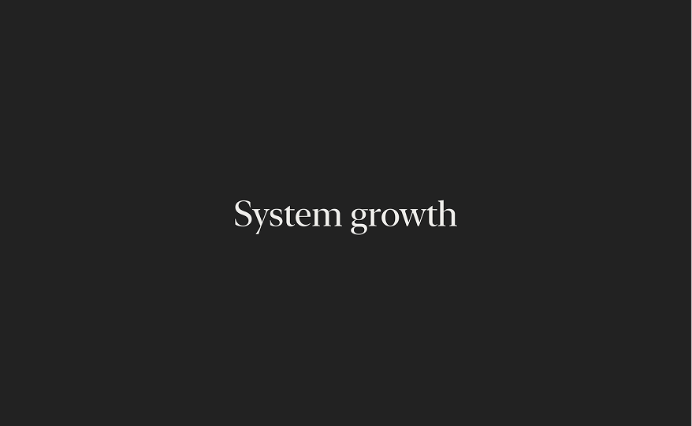

Find the system inside the problem.
I connect the screen in front of us to the product, technical, and organizational forces behind it—then choose the level where design can create the most leverage.
Systems · Platforms · 0→1 products
I turn ambiguity into shared foundations that help teams move faster—with more clarity, consistency, and confidence.
Explore selected work01 / Selected work
Three stories about creating leverage across products, teams, and organizations.

Explore case 01 Meta · Product infrastructure Making good design inevitable. Scaling a component library into trusted organizational infrastructure for teams building across Facebook. 76% adoption across Facebook Explore case
02 Citi · Platform strategy
From prototype to platform.
Establishing Citi’s first shared foundation across products, customer tiers, brands, and global markets.
3× design velocity
Explore case
02 Citi · Platform strategy
From prototype to platform.
Establishing Citi’s first shared foundation across products, customer tiers, brands, and global markets.
3× design velocity
 Explore case
03 Feelmore Labs · 0→1 product
Making wellness stick.
Turning an unfamiliar wearable into a guided experience people could understand, trust, and return to.
180K+ completed sessions
Explore case
03 Feelmore Labs · 0→1 product
Making wellness stick.
Turning an unfamiliar wearable into a guided experience people could understand, trust, and return to.
180K+ completed sessions
More evidence
Growth, product coherence, and experience systems.
02 / How I lead
I connect the screen in front of us to the product, technical, and organizational forces behind it—then choose the level where design can create the most leverage.
I make ambiguity discussable. Research, prototypes, principles, and precise framing help leadership and delivery teams see the same problem and move together.
The strongest system is one people can evolve without its original author. I use documentation, critique, and partnership to turn decisions into durable organizational capability.
My measure of success
Does the work keep making good decisions easier after I’m gone?

03 / About
Over the past decade, I’ve worked across consumer products, financial platforms, brand systems, and product infrastructure. The thread is consistent: I find the shared foundation that helps a product—and the organization behind it—scale.
I’m at my best in consequential, ambiguous spaces: when a product needs a clearer direction, teams need a common language, or a one-off solution needs to become a system.
04 / Writing
05 / Let’s talk